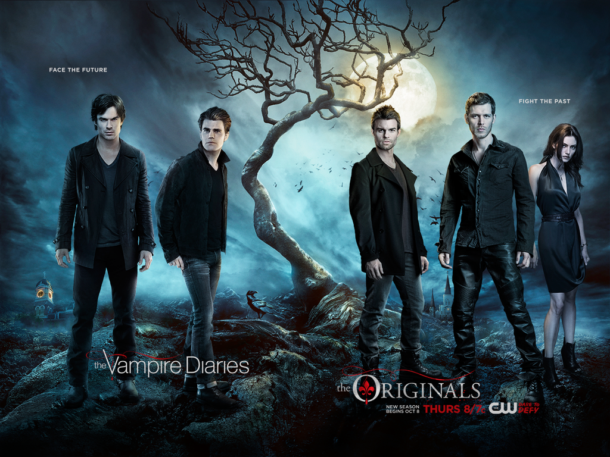
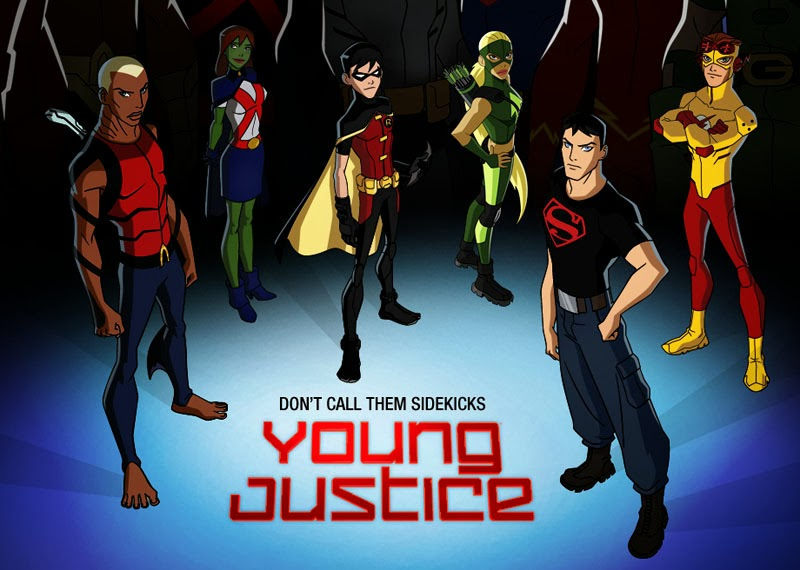

Home TV Shows Books Sweets Extras
My Favorite TV Shows

The Originals and the Vampire Diaries
Both of these shows are shows about Vampires. Seeing as I'm obsessed with anything mythical, I can't get enough of these two shows. I have crushes on most of the boys and the girls are awesome in the show, too. From vampires and werewolves to witches and hybrids, this show has it all. Vampire Diaries; based on two vampire brother who have been alive (but technacially dead) for a long time have been through it all and The Originals; based on the first (hence Original) vampires have been through more than everything. Watching these shows make me happy and I look forward to them every week.

Young Justice
YJ: the junior league for the Justice League. I watch this show all the time [on Netflix] and although it saddens me that the show ended, they are still legitimately my aspiration. Okay, of coarse I know I can't be like KF [Kid Flash} or Martian Girl but I really love them and I love watching them. Seeing them work together and combine all their super powers; Aqualad, KF, Robin, Martian girl and Super boy, to defeat enemies is always really cool. Although I know the show ended

F.R.I.E.N.D.S
Just like Young Justice, Friends is no lnger on TV but is on netflix. Now you can tell Netflix is my life (I'm so basic) therefore I'm either watching this show or YJ. This show makes me happy, it makes me laugh and it usually brings joy into my life but there are still other times where I might feel sad, mostly because I'll sit there and wish I had a group of friends like that or just simply because something in the show upset me. Either way, I love watching this show. Seeing the six of them go through the obstacles of life, which isn't pretty easy, together is a nice thing to see.